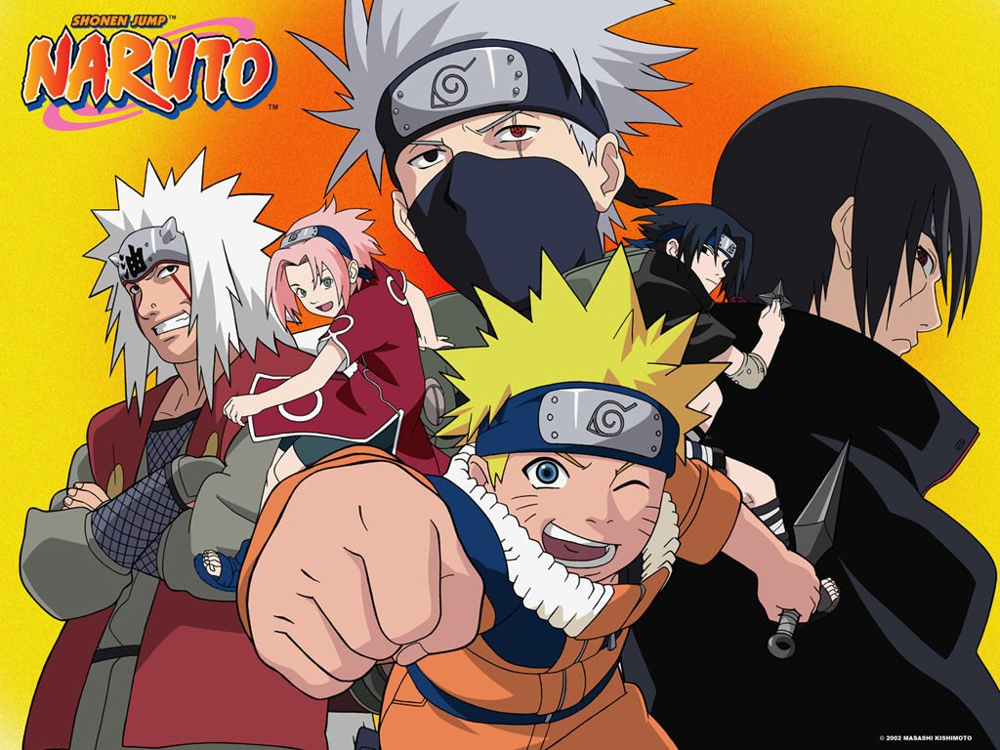
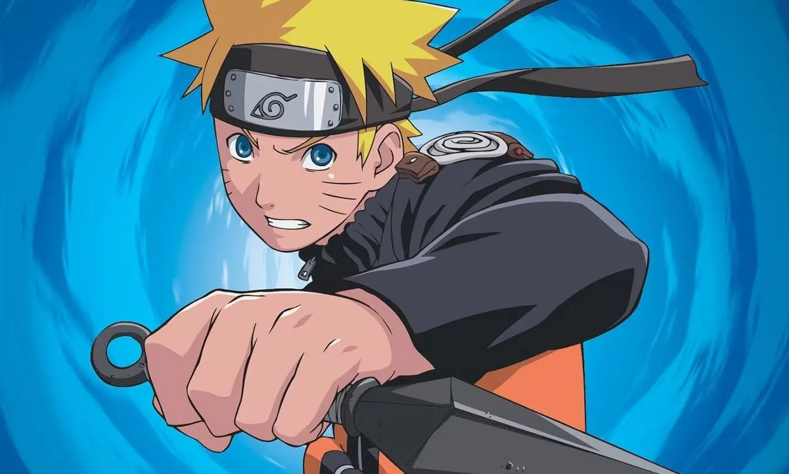
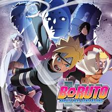

-

História do Naruto Clássico
-
Lançado dia 21 de setembro de 1999 e Finalizado: 10 de novembro de 2014, Naruto Clássico acompanha
a jornada de Naruto Uzumaki, um jovem ninja órfão que busca reconhecimento e sonha em se tornar Hokage.
A história se passa na Vila da Folha e é dividida em alguns arcos principais.
1. Introdução e Formação do Time 7:
- Naruto cresce sozinho e rejeitado pela vila porque tem a Raposa de Nove Caudas (Kurama) selada dentro
dele.
- Ele se torna ninja e forma o Time 7, junto com Sasuke Uchiha e Sakura Haruno, sob a liderança do
sensei Kakashi Hatake.
- Na primeira missão séria, eles enfrentam Zabuza Momochi e Haku, ninjas renegados da Vila da
Névoa.
---
2. Exames Chunin e Ataque de Orochimaru:
- Naruto e seus amigos participam dos Exames Chunin, onde enfrentam ninjas de várias vilas.
- Durante o exame, Orochimaru, um ninja traidor, marca Sasuke com o "Selo Amaldiçoado".
- Naruto derrota "Neji Hyuga", provando que o destino pode ser mudado.
- Sasuke luta contra Gaara, e Naruto usa o poder da Raposa para derrotá-lo.
- (Orochimaru mata o Terceiro Hokage), e a Vila da Folha é atacada.
---
3. A Busca por Tsunade:
- Jiraiya leva Naruto para procurar Tsunade, uma das Lendárias Sannin, para que ela se torne a Quinta
Hokage.
- Naruto aprende o Rasengan, uma técnica poderosa.
- Eles enfrentam Orochimaru e Kabuto, e Tsunade aceita ser Hokage.
---
4. Missão de Resgate de Sasuke:
- Sasuke, obcecado por poder para (vingar sua família) e derrotar "Itachi Uchiha" (Seu irmão), decide
seguir Orochimaru.
- Naruto e um grupo de ninjas tentam impedir, enfrentando os Cinco do Som.
- Naruto e Sasuke lutam no Vale do Fim; Sasuke vence, mas não mata Naruto e foge.
---
5. Final do Naruto Clássico
- Naruto, frustrado por não conseguir trazer Sasuke de volta, decide treinar com "Jiraiya" por dois
anos.
- A história continua em Naruto Shippuden, com ele retornando mais forte para enfrentar a (Akatsuki) e
tentar salvar Sasuke.
-

História de Naruto Shippuden:
Naruto Shippuden é a continuação de Naruto Clássico e acompanha Naruto Uzumaki após dois anos e meio de
treinamento com Jiraiya. Agora mais forte, ele retorna à Vila da Folha para enfrentar novos desafios,
incluindo a organização Akatsuki, a busca por Sasuke e a luta contra ameaças globais.
---
1. Retorno à Vila e a Ameaça da Akatsuki:
- Naruto volta à Vila da Folha mais experiente e com novas técnicas.
- A Akatsuki, organização de ninjas renegados, começa a capturar as Bijuus (feras de cauda).
- Gaara, agora Kazekage, é sequestrado e tem o Shukaku extraído por Deidara e Sasori.
- Naruto e sua equipe resgatam Gaara, e Chiyo sacrifica sua vida para revivê-lo.
---
2. Busca por Sasuke:
- Naruto, Sakura e Kakashi enfrentam **Orochimaru e Kabuto para tentar recuperar Sasuke.
- Sasuke derrota Orochimaru e forma seu próprio grupo, Hebi (Taka), para caçar Itachi Uchiha.
- Sasuke finalmente enfrenta Itachi, que morre na batalha.
- Após a luta, Sasuke descobre a verdade: Itachi sacrificou tudo para proteger Konoha. Isso o leva a se
aliar a Obito Uchiha e à Akatsuki.
---
3. Ascensão da Akatsuki e a Invasão de Pain:
- A Akatsuki continua sua caçada pelas Bijuus e captura vários Jinchurikis.
- Naruto treina com os Sapos de Myoboku e aprende o Modo Sábio.
- Pain, líder da Akatsuki, ataca Konoha e destrói a vila.
- Naruto enfrenta Pain e, após uma batalha intensa, consegue derrotá-lo.
- Naruto convence Nagato (Pain) a acreditar na paz, e ele revive todos que haviam morrido no
ataque.
---
4. Guerra Ninja e a Verdade sobre Madara:
- A Akatsuki, agora liderada por Obito Uchiha, declara guerra contra as cinco grandes nações.
- Naruto domina o poder da Nove Caudas (Kurama) e se torna ainda mais forte.
- A Quarta Grande Guerra Ninja começa, com o Exército Shinobi lutando contra os ninjas revividos pelo
Edo Tensei de Kabuto.
- Madara Uchiha é ressuscitado e revela seu plano para prender o mundo no Tsukuyomi Infinito.
- Obito se torna o Jinchuriki do Dez-Caudas.
---
5. A Batalha Final: Kaguya e o Destino de Naruto e Sasuke:
- Naruto e Sasuke despertam o poder do Sábio dos Seis Caminhos.
- Obito se redime e ajuda na luta contra Madara, mas este é traído por Zetsu Negro, que revive Kaguya
Otsutsuki.
- Naruto, Sasuke, Sakura e Kakashi lutam contra Kaguya e conseguem selá-la.
---
6. Naruto vs. Sasuke e o Final da Guerra:
- Com a guerra vencida, Sasuke desafia Naruto para um último confronto no Vale do Fim.
- Após uma luta épica, ambos terminam feridos e perdem um braço.
- Sasuke reconhece Naruto e desiste de sua vingança.
---
7. Epílogo: O Sonho de Naruto se Realiza
- Naruto e Sasuke ajudam a reconstruir o mundo ninja.
- Naruto finalmente se torna o Sétimo Hokage.
- Ele se casa com Hinata Hyuga, e eles têm dois filhos, Boruto e Himawari.
- A história continua em (Boruto Naruto Next Generations.)
---
Essa foi a jornada de Naruto em Shippuden ! 😊
-

Boruto: Naruto Next Generations é a continuação direta de Naruto Shippuden
, focando na nova geração de ninjas da Vila Oculta da Folha, especialmente no filho de Naruto
Uzumaki, Boruto Uzumaki. Aqui está um resumo da história:
Contexto e Premissa:
Após os eventos de *Naruto Shippuden, Naruto Uzumaki finalmente se torna o Sétimo Hokage e lidera a Vila
Oculta da Folha em uma era de paz e modernização. No entanto, essa nova era trouxe desafios diferentes,
como avanços tecnológicos e mudanças na estrutura ninja. Boruto, filho de Naruto e Hinata, cresce nesse
cenário, mas sente ressentimento pela ausência de seu pai, que está sempre ocupado com seus deveres como
Hokage.
ARCOS PRINCIPAIS
1. Exame Chunin e Aparição de Momoshiki:
- Boruto entra no Exame Chunin ao lado de seus amigos Sarada Uchiha (filha de Sasuke e Sakura) e Mitsuki
(criação de Orochimaru).
- Durante o exame, a Vila é atacada por Momoshiki e Kinshiki Otsutsuki, membros do poderoso clã
Otsutsuki.
- Naruto e Sasuke enfrentam Momoshiki, mas Boruto dá o golpe final com um Rasengan especial.
- Momoshiki, antes de morrer, marca Boruto com um selo chamado Karma, o que se torna um dos principais
mistérios da trama.
---
2. A Origem do Karma e o Clã Otsutsuki:
- Boruto começa a perceber que o selo Karma lhe dá poderes estranhos.
- Ele conhece Kawaki, um jovem que também possui Karma, e descobre que o selo é uma ferramenta usada
pelos Otsutsuki para ressuscitar em novos corpos.
- Jigen, líder da organização Kara, revela ser a reencarnação de Isshiki Otsutsuki e tenta capturar
Kawaki.
- Naruto e Sasuke enfrentam Jigen, mas Naruto acaba selado temporariamente.
---
3. Baryon Mode e a Perda de Kurama:
- Naruto desperta o Modo Baryon, um poder extremo que sacrifica a energia vital de Kurama para derrotar
Isshiki.
- Isshiki é derrotado, mas Kurama morre no processo, deixando Naruto muito enfraquecido.
---
4. Traição de Code e o Destino de Boruto:
- Code, um seguidor de Isshiki, busca vingança e tenta capturar Boruto e Kawaki.
- Boruto é possuído temporariamente por Momoshiki, mas Kawaki o "mata" para impedir que Momoshiki tome
controle definitivo.
- Boruto sobrevive, mas agora está irreversivelmente ligado a Momoshiki.
---
5. Reversão dos Destinos A Ascensão de Kawaki e a Queda de Boruto:
- Kawaki decide proteger Naruto a todo custo e acaba enfrentando Boruto.
- Com a ajuda de Eida (uma personagem com poderes únicos), a realidade é alterada: todos passam a
acreditar que Kawaki é o verdadeiro filho de Naruto e que Boruto é um traidor.
- Boruto se torna um fugitivo, e seu ex-amigo Mitsuki o persegue.
- Sarada e Sumire são as únicas que lembram a verdade e tentam ajudá-lo.
---
Salto Temporal e o Futuro de Boruto
O anime encerrou sua primeira parte com a promessa de um salto temporal, onde Boruto e Kawaki terão
um confronto final.
A continuação, Boruto: Two Blue Vortex, já começou no mangá e mostra Boruto retornando mais forte
após anos de exílio.😊